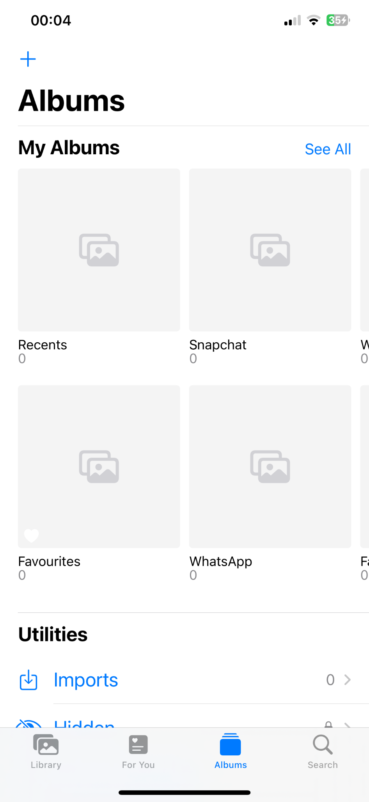

PhotoZero
Hide photos instantly with two downward swipes in the Albums view — no refresh, app close or restart required.
Version 1.2.2 · RootlessHow it works
Swipe down twice in the Photos app to hide photos immediately. Repeat the gesture to restore them. Your original photos are not deleted.
Experimental. Cached content and some third-party pickers may not be hidden on all devices.
Screenshot
